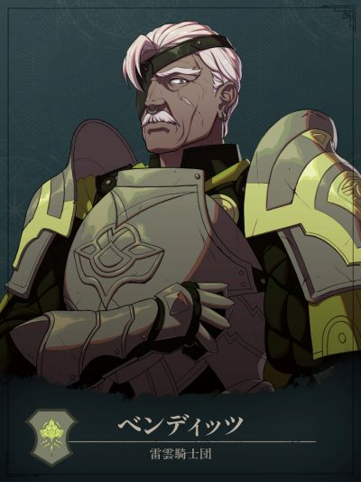

COMPANION DOSSIER
班迪兹
ベンディッツ · 无派系 / 其他
检索别名：班迪兹 / 本迪茨
喜欢什么，送什么
武器、战术与军史书籍、军功勋章、棋盘游戏
喜欢的东西：伟大的奥古斯特的战术、上进的年轻人
查看送礼原文与例外 →第一部 · 各路线加入条件
- 凯伊线
- 3S / 9R
- 迪托利希线
- 2S / 7R
- 赛奥朵拉线
- 1S / 8R
- 蕾达线
- 3S / 7R
S = 支援等级 · R = 名声等级 · — = 无法招募
查看招募原文与附加说明 →交涉要准备什么
本批尚未独立核对该角色交涉流程。先看上方原表的物品、金钱、外传与 S／R 门槛；没有写出明细不代表无条件加入。
怎么养，怎么转职
编辑培养建议
战车兵留职／高命中弓手与突进支援
- 前期
- 这里指招募后的入队初期：加入时已是战车兵，先保留现职、集中弓术与现有装备，不必退回初级重练。骑乘战车兵时「車上の戦闘術」提供命中+20，适合补刀与稳定削血；命中高不等于能一击击倒，出手前仍看伤害与敌方反击。
- 中期
- 继续战车兵精通，不为职业阶级自动改走森林骑士。装甲在骑乘状态提供防御力+5，同时不能回避；接敌按全部攻击命中计算，并让治疗者能覆盖。精通「突撃体勢」后，使用「突進」可获耐物+10，维持至下次我方阶段；先检查突进后的落点与敌方覆盖，不为触发减伤冲入包围。
- 后期目标
- Lv.35「戦車乗り+」只在战车兵时增加猛击次数2次，可把多次使用机会留给关键接敌；不是每回合追加两次行动。战车兵的成长效果随角色等级提高，终盘仍可留职。凯伊线或第三部已有可配备的骑乘动物时，再按实际力、HP与守备缺口补强，不为等稀有坐骑停下培养。
- 考试与解锁
- 留在已取得的战车兵不需另考上级职；若重新检查考试，以马术D、弓术C为备考方向，并按界面确认开放条件与通过率，不能把Rank写成绝对门槛。个人命中、突进及骑乘防御都有状态条件；下马或换职后须重新检查实际技能效果。
- 取舍与限制
- 精通提供的是耐物，不能据此硬接法师；不能回避时更要避免多敌围攻。转成其他弓骑兵会失去战车兵限定的个人命中与猛击次数优势，应先比较收益。已有成熟弓手时，把他作为突进与补刀备选即可，不必为追求未实测的成长公式挤占主力训练。
这些是阶段性培养方向，并非必须逐级转职的固定链。适用难度及版本未做独立实测；优先满足当前队伍缺口。
本次新增条目经过来源页面核对，未逐项游戏内实测。没有补充明细的“交涉”仍待核验，不表示没有额外要求。